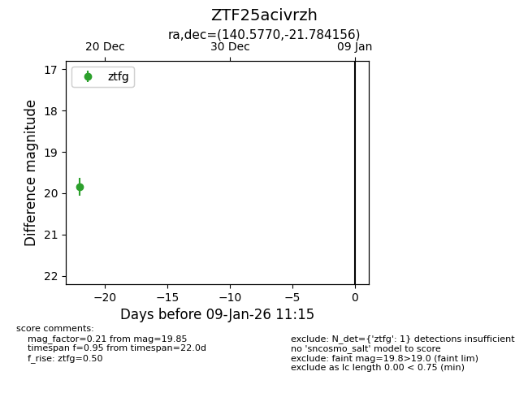
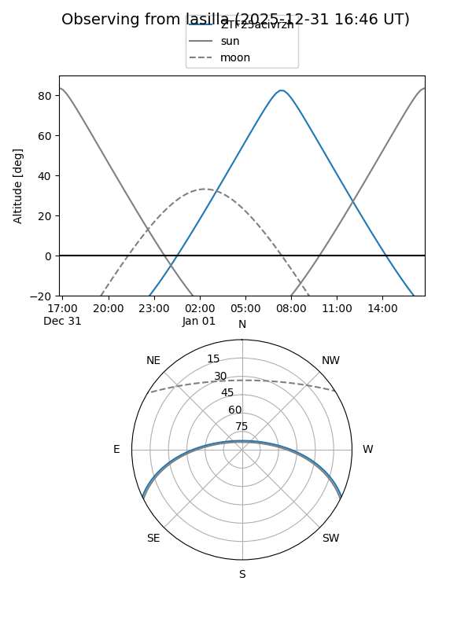

ZTF25acivrzh
Target ZTF25acivrzh at 2025-12-18 13:42
Aliases and brokers:
FINK: fink-portal.org/ZTF25acivrzh
Lasair: lasair-ztf.lsst.ac.uk/objects/ZTF25acivrzh
ALeRCE: alerce.online/object/ZTF25acivrzh
alt names
ZTF25acivrzh (ztf,fink_ztf)
Coordinates:
equatorial (ra, dec) = 140.5770,-21.78416
equatorial (HMS+DMS) = 09:22:18.48,-21:47:02.96
galactic (l, b) = (251.6717,+19.65558)
Photometry
last ztfg=19.85
1 ztfg detections
Lightcurve

Visibility


Additional plots